Chinese Mid-Autumn Mooncake
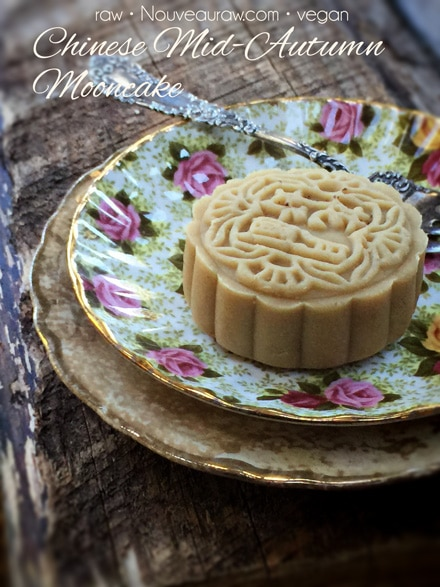
~ raw, vegan, gluten-free ~
Mooncakes are not to be confused with Moon Pies. That was what I at first thought when asked to create a raw mooncake. I had no clue what these little packages of joy were… thank goodness for Google.
I remember as a little girl visiting the local library, thumbing through The Encyclopedia Britannica… daydreaming that one day I would have my very own set. Well, I never did get my own set, but I guess I won’t complain… it’s much easier to lug around Google than all those books. hehe (still would like a set)
What are Mooncakes?
Mooncakes are traditional Chinese pastries generally eaten during the Mid-Autumn Festival. They are typically about two to four inches across and up to two inches thick. They have an outer pastry layer enveloping a sweet, dense filling. Usually eaten in small wedges during the festival, along with Chinese tea. There are many different styles and sizes of mooncake molds, click (here) to see a similar one that I used. Once on Amazon, check out all the different patterns.
The Meaning of the Mooncake…
I also learned that in Chinese culture, roundness symbolizes completeness, and togetherness. A full moon symbolizes prosperity and reunion for the whole family. The round mooncake shape complements the harvest moon in the night sky at the Mid-Autumn Festival.
Partaking of mooncakes is a profound cultural tradition rooted deep in the heart of the Chinese people, as it symbolizes a spiritual feeling. Families gather to watch the full moon as they enjoy mooncakes, expressing their love and best wishes to those around them. I absolutely love this tradition.
I had a lot of fun pulling together the ingredients for this project. To me, the combination of figs, balsamic vinegar, and fennel seeds, set the perfect stage for this crisp Fall celebration treat. Putting aside tradition and taste, you know I had to select ingredients that were going to benefit our bodies, didn’t you? The main one that I want to touch base on is the Calimryna figs.
They are an excellent source of both soluble and insoluble fiber, providing 20 percent of the recommended daily value in one serving. Soluble fiber is our friend as it slows down the digestions of carbohydrates, helping your body absorb more nutrients from food. Looking to bump up your intake of minerals like potassium, calcium, and iron? Bingo! Calling all figs!
It’s time to let you go, I have chatted your ear off and if you want to be ready for the Mid-Autumn Festival (This year it’s Sept. 27th, 2015)… you best get busy making mooncakes! Enjoy, and I would love to hear from you. amie sue
Yields 9-10 mooncakes
Outer mooncake layer:
- 2 cups fine almond flour, raw or purchased
- 6 Tbsp maple syrup or agave
- 1 tsp almond extract or 10 drops orange essential oil
Fennel fig center:
- 1 cup (100 g) walnuts, soaked & dehydrated
- 2 tsp fennel seeds
- Pinch Himalayan pink salt
Preparation:
Outer mooncake layer: creates 9 ( 2 Tbsp balls)
- In a food processor, fitted with the “S” blade, combine the almond flour, maple syrup (or desired liquid sweetener), and the extract or essential oil. Process until it starts to form small balls.
- I used the orange essential oil.
- For this dough to turn out you need to use very fine almond flour, not meal (not whole ground almonds). This not only gives the dough a more delicate finish, but it also helps to make it moldable. You can make raw almond flour yourself… it does take a few steps, but it is worth it in the end. I recommend using pure white almond pulp that has been dehydrated and ground into flour.
- Divide the dough into 9 balls. By weight, 40 g or 2 Tbsp worth. I recommend using a scale as it is much quicker and accurate than measuring each one out with measuring spoons.
- Cover with plastic and set aside while you make the filling.
Fennel fig center: creates 10 (1/4 cup balls)
- Place the dried figs in a bowl with enough warm water to cover them. Allow them to soak until they soften (roughly 15 minutes).
- In a food processor, combine the walnuts, figs, sesame seeds, vinegar, fennel seeds, and salt. Process until it forms a paste.
- Divide the batter into 10 balls. By weight, 50 g or 1/4 cup worth. Again, a scale is really handy for this job. You will have one extra filling ball to eat while making the mooncakes. We all need nutrients to support our creative time in the kitchen. See, I was thinking of you!
Assembly: See the photos below for a better visual explanation.
- Take the dough and roll out to roughly 4 1/2″ in circumference.
- Do this in between two pieces of plastic wrap.
- The plastic wrap will allow you to monitor the size you are rolling it out to.
- Place a fig ball in the center and gently gather the edges around the base of the fig ball.
- Don’t pinch the large folds together creating lumps of thick dough. Just gently bring all edges together, smoothing out the connecting lines.
- Roll the ball between the palms of your hands. By doing this it will This will create a smooth surface and work out the “wrinkles.”
- Option: You can roll the ball in raw cacao powder if you wish to create a different look. If you want to make some plain ones and some chocolate ones… make the plain ones first before you dirty up the stamp with cacao.
- I will say that the ones rolled in cacao powder release from the mooncake stamp easily. The plain ones will stick a tad but nothing to make you pull out your hair.
- Take the mooncake stamp and turn it upside down, place the ball inside, and gently press it in with your fingers.
- Turn it upside down and place it on the cutting board and press the plunger down.
- Pull the plunger back, along with the base, causing the cake to come out of the bottom. Easier done than explained here. :)
- My advice is to make sure that you are fully committed to pressing the stamp into the dough once you start… don’t twist or jiggle it around, as this will blur the stamp pattern. If this happens, no harm will be done. Remove the dough and smooth it back out and roll it in your hands as instructed above.
- That’s it! My instructions seem long… I just wanted to share every step with you… since I can’t be there to help. :)
- Enjoy and store the leftovers in the fridge for 1-2 weeks or in the freezer for 1-2 months.
The phases of a Mooncake…
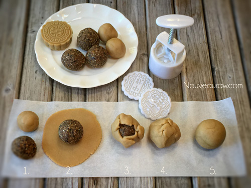
These are the figs that I used. Cut that little tip off before using.
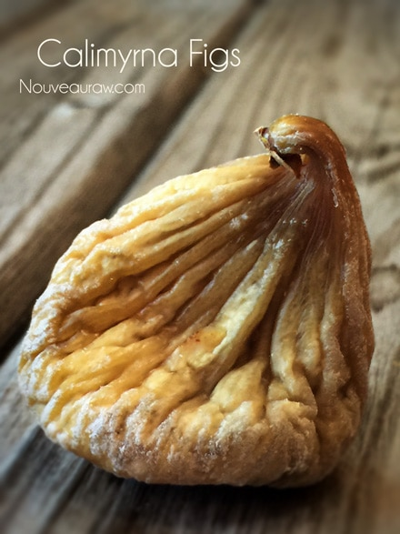
Batters are ready to go…
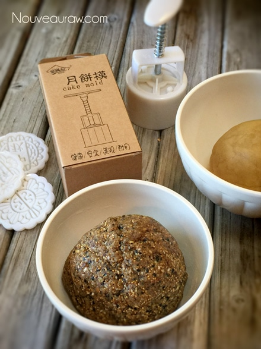
Batter balls now ready to go….
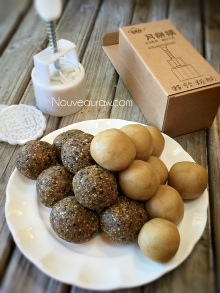
Sandwiched in between plastic wrap is the easiest way to go.
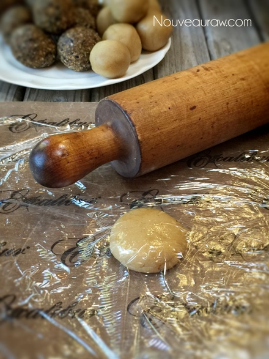
Go ahead and press it out to about 4″ if you can.
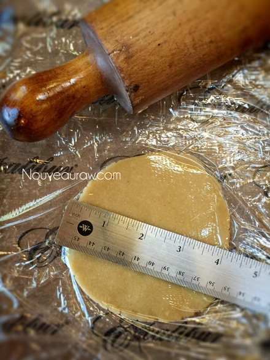
Place the fig ball in the center…
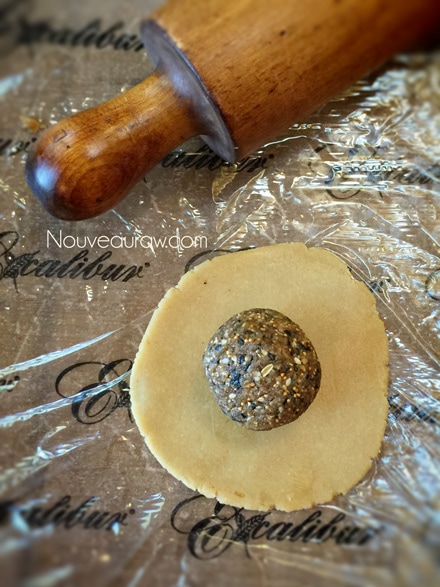
Pinch it shut and roll it smooth in your hands.
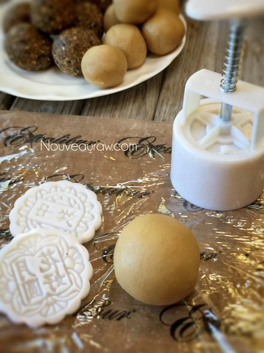
Gently press the ball into the stamp.
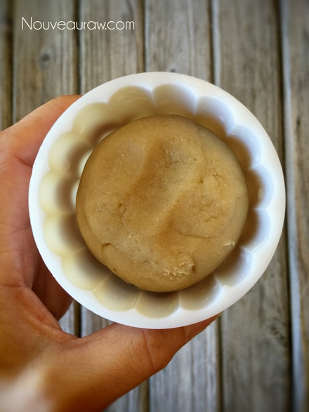
Place on the cutting board, press and release.
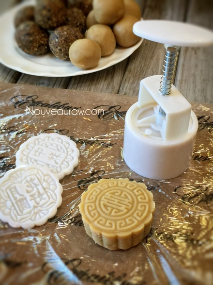
For a chocolate coating. Bathe the ball in cacao powder.
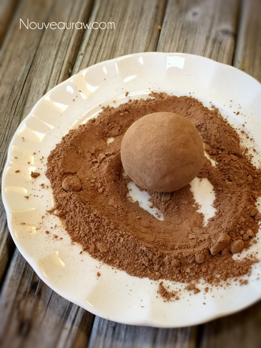
This is what the inside looks like.
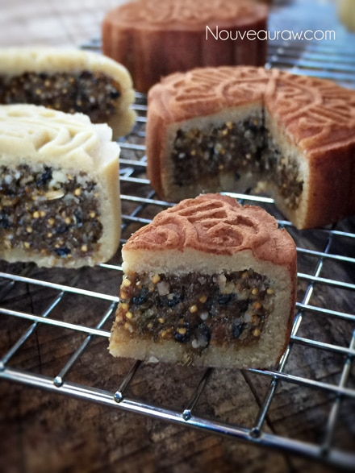
I hope you enjoyed this recipe. This year I will be sharing the
moon, mooncake and tea with my husband…
expressing my love and best wishes to all of you.
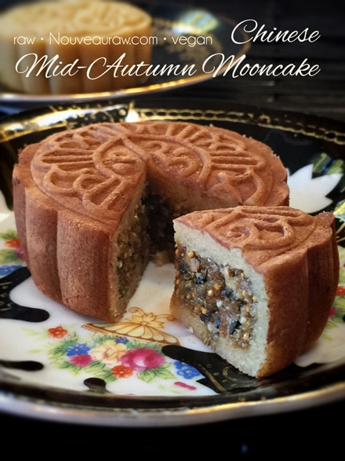
© AmieSue.com